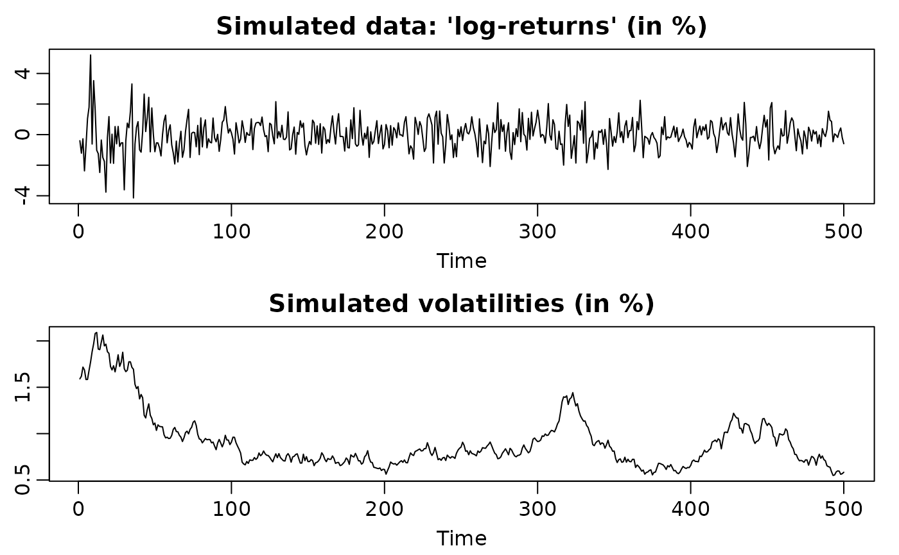

svsim is used to produce realizations of a stochastic volatility (SV)
process.
svsim(len, mu = -10, phi = 0.98, sigma = 0.2, nu = Inf, rho = 0)Arguments
- len
length of the simulated time series.
- mu
level of the latent log-volatility AR(1) process. The defaults value is
-10.- phi
persistence of the latent log-volatility AR(1) process. The default value is
0.98.- sigma
volatility of the latent log-volatility AR(1) process. The default value is
0.2.- nu
degrees-of-freedom for the conditional innovations distribution. The default value is
Inf, corresponding to standard normal conditional innovations.- rho
correlation between the observation and the increment of the log-volatility. The default value is
0, corresponding to the basic SV model with symmetric ``log-returns''.
Value
The output is a list object of class svsim containing
- y
a vector of length
lencontaining the simulated data, usually interpreted as ``log-returns''.- vol
a vector of length
lencontaining the simulated instantaneous volatilitiesexp(h_t/2).- vol0
The initial volatility
exp(h_0/2), drawn from the stationary distribution of the latent AR(1) process.- para
a named list with five elements
mu,phi,sigma,nu, andrho, containing the corresponding arguments.
Details
This function draws an initial log-volatility h_0 from the stationary
distribution of the AR(1) process defined by phi, sigma, and mu.
Then the function jointly simulates the log-volatility series
h_1,...,h_n with the given AR(1) structure, and the ``log-return'' series
y_1,...,y_n with mean 0 and standard deviation exp(h/2).
Additionally, for each index i, y_i can be set to have a conditionally heavy-tailed
residual (through nu) and/or to be correlated with (h_{i+1}-h_i)
(through rho, the so-called leverage effect, resulting in asymmetric ``log-returns'').
Note
The function generates the ``log-returns'' by
y <- exp(-h/2)*rt(h, df=nu). That means that in the case of nu < Inf
the (conditional) volatility is sqrt(nu/(nu-2))*exp(h/2), and that corrected value
is shown in the print, summary and plot methods.
To display the output use print, summary and plot. The
print method simply prints the content of the object in a moderately
formatted manner. The summary method provides some summary statistics
(in %), and the plot method plots the the simulated 'log-returns'
y along with the corresponding volatilities vol.
See also
Examples
## Simulate a highly persistent SV process of length 500
sim <- svsim(500, phi = 0.99, sigma = 0.1)
print(sim)
#>
#> Simulated time series consisting of 500 observations.
#>
#> Parameters: level of latent variable mu = -10
#> persistence of latent variable phi = 0.99
#> standard deviation of latent variable sigma = 0.1
#> degrees of freedom parameter nu =Inf
#> leverage effect parameter rho =0
#>
#> Simulated initial volatility:
#>
#> Simulated volatilities:
#> [1] 0.003820212 0.003685216 0.003856812 0.004152596 0.004125342 0.004294531
#> [7] 0.004331441 0.004570926 0.004822981 0.004996950 0.004776639 0.004452808
#> [13] 0.004281872 0.004606417 0.004861330 0.004796152 0.004850194 0.005037571
#> [19] 0.005070258 0.005034304 0.004681866 0.004419239 0.004384852 0.004179659
#> [25] 0.004277173 0.004025539 0.003859171 0.003684930 0.003977686 0.003843913
#> [31] 0.003983053 0.004378062 0.004374539 0.004572447 0.005148718 0.005037118
#> [37] 0.004692063 0.004854192 0.005040343 0.005214302 0.005139285 0.004613044
#> [43] 0.004743498 0.004713424 0.005035210 0.004718593 0.004824680 0.004654661
#> [49] 0.004415429 0.004751616 0.004816151 0.005035166 0.005175739 0.005759705
#> [55] 0.005745427 0.005514718 0.006093578 0.006403239 0.006201487 0.006214093
#> [61] 0.006465689 0.005993360 0.006000168 0.005452962 0.005618068 0.005558411
#> [67] 0.005513884 0.005589039 0.005356487 0.005636836 0.006029307 0.006511244
#> [73] 0.006501252 0.006344225 0.006536544 0.006531963 0.006298044 0.005625907
#> [79] 0.005350275 0.005201696 0.004843328 0.005159292 0.005263002 0.005426811
#> [85] 0.005604500 0.005501503 0.005249530 0.005394813 0.005237455 0.005697025
#> [91] 0.005893405 0.005992004 0.005884807 0.005812129 0.005944344 0.005862497
#> [97] 0.005690628 0.005315695 0.006015461 0.006116853
#> [ reached getOption("max.print") -- omitted 400 entries ]
#>
#> Simulated data (usually interpreted as 'log-returns'):
#> [1] -0.0061534871 0.0005004893 0.0002776952 0.0041589932 -0.0039676921
#> [6] -0.0028102963 0.0033001035 0.0054733947 -0.0027570595 -0.0012621682
#> [11] 0.0033459538 -0.0025364263 -0.0048409860 -0.0054403369 -0.0013413879
#> [16] 0.0087105245 -0.0056779221 -0.0022624102 -0.0048520992 0.0081068545
#> [21] -0.0090267849 0.0064279239 0.0035416603 -0.0056099590 0.0014257452
#> [26] -0.0014461440 0.0016494580 0.0012666442 0.0052380680 0.0043991374
#> [31] -0.0026571028 -0.0055234248 -0.0024722029 0.0080411275 0.0028033051
#> [36] 0.0002634585 -0.0027358310 0.0053671147 0.0045390710 -0.0119488419
#> [41] 0.0038692624 0.0071120044 0.0024550446 0.0001690683 -0.0066038294
#> [46] 0.0018550276 -0.0123714149 -0.0053529935 0.0069514729 -0.0028438185
#> [51] 0.0058766179 0.0021917337 -0.0110209686 -0.0002389062 -0.0030157444
#> [56] -0.0024661329 0.0014976310 0.0021129298 -0.0038714333 0.0048271840
#> [61] 0.0061124472 0.0037021630 -0.0057101138 0.0027816130 -0.0035864471
#> [66] -0.0020110620 0.0043959767 -0.0086769572 -0.0001512035 -0.0049222371
#> [71] -0.0063497907 -0.0064449735 0.0007630309 0.0068711674 -0.0022722267
#> [76] -0.0014340336 -0.0072915342 0.0070444520 -0.0026227092 -0.0008705135
#> [81] -0.0031627074 -0.0021047591 -0.0027999269 0.0058835307 0.0048451615
#> [86] 0.0091813991 0.0080606758 0.0010268406 0.0012425689 0.0067790806
#> [91] -0.0097342003 -0.0031565151 0.0057524744 0.0003015868 -0.0021479379
#> [96] 0.0080260165 0.0040881115 0.0067554430 0.0007629135 0.0015352625
#> [ reached getOption("max.print") -- omitted 400 entries ]
summary(sim)
#>
#> Simulated time series consisting of 500 observations.
#>
#> Parameters: level of latent variable mu = -10
#> persistence of latent variable phi = 0.99
#> standard deviation of latent variable sigma = 0.1
#> degrees of freedom parameter nu = Inf
#> leverage effect parameter rho = 0
#>
#> Simulated initial volatility (in %): 0.361379
#>
#> Summary of simulated volatilities (in %):
#> Min. 1st Qu. Median Mean 3rd Qu. Max.
#> 0.3685 0.5577 0.6462 0.6709 0.7835 1.0679
#>
#> Summary of simulated data (in %):
#> Min. 1st Qu. Median Mean 3rd Qu. Max.
#> -2.19230 -0.49873 -0.02303 -0.05056 0.39604 3.15033
plot(sim)

## Simulate an SV process with leverage
sim <- svsim(200, phi = 0.94, sigma = 0.15, rho = -0.6)
print(sim)
#>
#> Simulated time series consisting of 200 observations.
#>
#> Parameters: level of latent variable mu = -10
#> persistence of latent variable phi = 0.94
#> standard deviation of latent variable sigma = 0.15
#> degrees of freedom parameter nu =Inf
#> leverage effect parameter rho =-0.6
#>
#> Simulated initial volatility:
#>
#> Simulated volatilities:
#> [1] 0.005933625 0.006036816 0.006035404 0.006387876 0.006940028 0.006896220
#> [7] 0.006421731 0.006331208 0.006458288 0.006974266 0.007237511 0.007136204
#> [13] 0.006883225 0.006976550 0.006175253 0.006075101 0.005256850 0.005334391
#> [19] 0.005613577 0.006111226 0.005421235 0.005503503 0.005292845 0.005538443
#> [25] 0.005911326 0.006559672 0.006891984 0.007935607 0.007444822 0.007526115
#> [31] 0.008050027 0.007450109 0.008006945 0.009071337 0.008922134 0.009038271
#> [37] 0.007688047 0.008246564 0.008783365 0.009412880 0.009531707 0.008472552
#> [43] 0.008065450 0.008308230 0.007781147 0.007909307 0.008440930 0.008255653
#> [49] 0.008387758 0.007977665 0.007399913 0.007889058 0.007237335 0.006031041
#> [55] 0.006203249 0.006784661 0.007110615 0.007004534 0.007565952 0.006991426
#> [61] 0.007099928 0.006842173 0.007458856 0.006269165 0.006046655 0.006879717
#> [67] 0.007227865 0.007766497 0.008380295 0.007668051 0.007966796 0.008314316
#> [73] 0.008332338 0.008197941 0.007535998 0.007662020 0.007478142 0.006982238
#> [79] 0.006933672 0.006099019 0.005707610 0.006350829 0.005866307 0.006252767
#> [85] 0.006681784 0.007537968 0.007782778 0.007513801 0.006919169 0.006433289
#> [91] 0.006459920 0.006271373 0.006821137 0.006700319 0.006700577 0.006576417
#> [97] 0.006179837 0.006661242 0.006388748 0.006377784
#> [ reached getOption("max.print") -- omitted 100 entries ]
#>
#> Simulated data (usually interpreted as 'log-returns'):
#> [1] -0.0061264386 -0.0041482392 -0.0063976020 -0.0037865315 -0.0033420450
#> [6] 0.0074344131 0.0013601620 -0.0003315340 -0.0058176079 0.0038275173
#> [11] -0.0036677628 -0.0028161778 -0.0030809351 0.0101457673 -0.0021794553
#> [16] 0.0139801436 0.0053461370 0.0022352772 0.0004611562 0.0129872012
#> [21] -0.0099880228 0.0056803983 0.0010760277 -0.0092818831 -0.0102236948
#> [26] -0.0065834200 -0.0063660181 0.0009265485 0.0054978338 -0.0076616591
#> [31] 0.0122751925 -0.0077375033 -0.0050359019 -0.0020544747 -0.0072255889
#> [36] 0.0064780174 -0.0065788801 -0.0074024387 -0.0075874164 0.0013804113
#> [41] 0.0160412637 0.0035650150 -0.0056661653 0.0039857703 -0.0067996870
#> [46] 0.0093831374 0.0047856894 -0.0089467275 -0.0027562438 -0.0042986821
#> [51] -0.0061287680 -0.0031654822 0.0177361149 0.0089950329 0.0004803187
#> [56] -0.0080770769 -0.0131774401 -0.0061115266 -0.0008571990 -0.0012985107
#> [61] 0.0024314258 -0.0054385521 0.0148026077 0.0043137861 -0.0084250832
#> [66] -0.0100117824 0.0028438555 -0.0066960669 0.0072804207 -0.0039503781
#> [71] -0.0008740439 0.0065177888 -0.0024700815 -0.0014285996 0.0071810137
#> [76] -0.0047610532 -0.0014868582 0.0031398102 0.0174080933 0.0020513613
#> [81] 0.0042787014 -0.0038458347 0.0023617180 0.0010447876 -0.0079265882
#> [86] -0.0097169092 0.0055945006 0.0140315079 0.0052400962 -0.0098680279
#> [91] -0.0014444984 -0.0091959814 0.0070179389 0.0102219967 -0.0057649980
#> [96] 0.0044359027 -0.0047072503 -0.0082823416 0.0006357326 0.0033741326
#> [ reached getOption("max.print") -- omitted 100 entries ]
summary(sim)
#>
#> Simulated time series consisting of 200 observations.
#>
#> Parameters: level of latent variable mu = -10
#> persistence of latent variable phi = 0.94
#> standard deviation of latent variable sigma = 0.15
#> degrees of freedom parameter nu = Inf
#> leverage effect parameter rho = -0.6
#>
#> Simulated initial volatility (in %): 0.6700614
#>
#> Summary of simulated volatilities (in %):
#> Min. 1st Qu. Median Mean 3rd Qu. Max.
#> 0.3551 0.6108 0.6821 0.6651 0.7528 0.9532
#>
#> Summary of simulated data (in %):
#> Min. 1st Qu. Median Mean 3rd Qu. Max.
#> -1.6734210 -0.4901291 -0.0305812 -0.0003545 0.4636128 1.7812250
plot(sim)
 ## Simulate an SV process with conditionally heavy-tails
sim <- svsim(250, phi = 0.91, sigma = 0.05, nu = 5)
print(sim)
#>
#> Simulated time series consisting of 250 observations.
#>
#> Parameters: level of latent variable mu = -10
#> persistence of latent variable phi = 0.91
#> standard deviation of latent variable sigma = 0.05
#> degrees of freedom parameter nu =5
#> leverage effect parameter rho =0
#>
#> Simulated initial volatility:
#>
#> Simulated volatilities:
#> [1] 0.003693627 0.004381801 0.010737660 0.005203284 0.009424047 0.009437770
#> [7] 0.005941771 0.005468824 0.007619051 0.007040159 0.010232337 0.007866097
#> [13] 0.005128493 0.008839171 0.005920270 0.008286610 0.008292515 0.008752778
#> [19] 0.004681677 0.005859896 0.008440000 0.004744214 0.003368254 0.007791405
#> [25] 0.008304323 0.004600416 0.007655863 0.003020562 0.006199227 0.005449486
#> [31] 0.004214057 0.005205601 0.010436180 0.007406865 0.006872882 0.008163162
#> [37] 0.005104865 0.004854092 0.003981026 0.004700872 0.003139893 0.008392066
#> [43] 0.005570656 0.006408177 0.004886071 0.007632958 0.006218436 0.003698400
#> [49] 0.003761925 0.005665108 0.006119047 0.005390730 0.007146486 0.003775896
#> [55] 0.006313029 0.007434286 0.003192521 0.005700233 0.003450198 0.004296973
#> [61] 0.004086928 0.003152448 0.008826290 0.005389175 0.005030616 0.003667816
#> [67] 0.004457757 0.006965420 0.007375697 0.006495104 0.005094321 0.003719953
#> [73] 0.002964963 0.005649306 0.003470752 0.007029080 0.003231560 0.004700010
#> [79] 0.006711299 0.005877348 0.004562471 0.005561582 0.005315089 0.004448222
#> [85] 0.004808145 0.007480387 0.006527953 0.005361096 0.005308634 0.003707233
#> [91] 0.005211991 0.007331873 0.006668424 0.006778767 0.008973067 0.004131636
#> [97] 0.003921795 0.007936623 0.003812234 0.005005893
#> [ reached getOption("max.print") -- omitted 150 entries ]
#>
#> Simulated data (usually interpreted as 'log-returns'):
#> [1] -3.927379e-03 4.964456e-03 1.317180e-02 7.642313e-03 -1.242494e-03
#> [6] 2.195389e-03 7.919477e-04 -1.549066e-03 1.606925e-03 8.909262e-03
#> [11] 1.571659e-02 2.984252e-03 -1.103991e-02 -1.503278e-02 1.111986e-02
#> [16] -7.337804e-03 -3.505989e-03 -3.105459e-04 -6.922002e-03 -3.145488e-03
#> [21] -1.298516e-02 -1.156036e-03 -1.852497e-03 8.180696e-03 9.054757e-03
#> [26] -4.866691e-04 -1.128562e-02 -7.382132e-04 4.756098e-03 -5.420310e-03
#> [31] 5.401153e-03 -9.103571e-04 2.809530e-03 9.401801e-03 -6.587333e-03
#> [36] -3.541989e-03 5.138396e-04 7.746084e-04 2.737012e-03 -1.501521e-03
#> [41] -3.766181e-03 -1.827175e-03 5.373800e-03 -2.216071e-03 1.065226e-03
#> [46] 5.585791e-03 -5.821343e-03 -3.720352e-03 3.839766e-04 5.408073e-03
#> [51] -1.798530e-03 -2.347514e-03 1.861730e-03 5.466266e-03 6.008619e-04
#> [56] -4.365877e-03 3.881680e-03 -4.499812e-04 -1.324010e-03 -2.855139e-03
#> [61] 2.451393e-03 2.232353e-06 -1.025111e-02 6.620832e-03 -5.568699e-03
#> [66] -8.464608e-04 -6.728640e-03 -2.493659e-03 -7.657478e-03 1.918722e-03
#> [71] 3.892881e-03 -4.558886e-03 -1.162166e-03 6.183287e-03 -1.159829e-03
#> [76] -4.894101e-03 -2.765956e-03 1.117460e-03 -1.197269e-02 -2.570989e-03
#> [81] -6.697689e-05 2.858707e-03 -2.515450e-03 1.899786e-03 -7.848717e-04
#> [86] -7.858053e-03 4.208771e-03 -8.432483e-03 9.282183e-03 4.660674e-03
#> [91] 1.313001e-02 -5.730723e-03 -4.049766e-03 3.546987e-03 2.807867e-03
#> [96] 4.221871e-03 -2.564968e-03 5.964313e-03 -6.351887e-03 6.700470e-03
#> [ reached getOption("max.print") -- omitted 150 entries ]
summary(sim)
#>
#> Simulated time series consisting of 250 observations.
#>
#> Parameters: level of latent variable mu = -10
#> persistence of latent variable phi = 0.91
#> standard deviation of latent variable sigma = 0.05
#> degrees of freedom parameter nu = 5
#> leverage effect parameter rho = 0
#>
#> Simulated initial volatility (in %): 0.6611606
#>
#> Summary of simulated volatilities (in %):
#> Min. 1st Qu. Median Mean 3rd Qu. Max.
#> 0.2719 0.4303 0.5488 0.5867 0.7037 1.9010
#>
#> Summary of simulated data (in %):
#> Min. 1st Qu. Median Mean 3rd Qu. Max.
#> -1.85705 -0.40073 -0.05020 -0.02689 0.33777 1.79387
plot(sim)
## Simulate an SV process with conditionally heavy-tails
sim <- svsim(250, phi = 0.91, sigma = 0.05, nu = 5)
print(sim)
#>
#> Simulated time series consisting of 250 observations.
#>
#> Parameters: level of latent variable mu = -10
#> persistence of latent variable phi = 0.91
#> standard deviation of latent variable sigma = 0.05
#> degrees of freedom parameter nu =5
#> leverage effect parameter rho =0
#>
#> Simulated initial volatility:
#>
#> Simulated volatilities:
#> [1] 0.003693627 0.004381801 0.010737660 0.005203284 0.009424047 0.009437770
#> [7] 0.005941771 0.005468824 0.007619051 0.007040159 0.010232337 0.007866097
#> [13] 0.005128493 0.008839171 0.005920270 0.008286610 0.008292515 0.008752778
#> [19] 0.004681677 0.005859896 0.008440000 0.004744214 0.003368254 0.007791405
#> [25] 0.008304323 0.004600416 0.007655863 0.003020562 0.006199227 0.005449486
#> [31] 0.004214057 0.005205601 0.010436180 0.007406865 0.006872882 0.008163162
#> [37] 0.005104865 0.004854092 0.003981026 0.004700872 0.003139893 0.008392066
#> [43] 0.005570656 0.006408177 0.004886071 0.007632958 0.006218436 0.003698400
#> [49] 0.003761925 0.005665108 0.006119047 0.005390730 0.007146486 0.003775896
#> [55] 0.006313029 0.007434286 0.003192521 0.005700233 0.003450198 0.004296973
#> [61] 0.004086928 0.003152448 0.008826290 0.005389175 0.005030616 0.003667816
#> [67] 0.004457757 0.006965420 0.007375697 0.006495104 0.005094321 0.003719953
#> [73] 0.002964963 0.005649306 0.003470752 0.007029080 0.003231560 0.004700010
#> [79] 0.006711299 0.005877348 0.004562471 0.005561582 0.005315089 0.004448222
#> [85] 0.004808145 0.007480387 0.006527953 0.005361096 0.005308634 0.003707233
#> [91] 0.005211991 0.007331873 0.006668424 0.006778767 0.008973067 0.004131636
#> [97] 0.003921795 0.007936623 0.003812234 0.005005893
#> [ reached getOption("max.print") -- omitted 150 entries ]
#>
#> Simulated data (usually interpreted as 'log-returns'):
#> [1] -3.927379e-03 4.964456e-03 1.317180e-02 7.642313e-03 -1.242494e-03
#> [6] 2.195389e-03 7.919477e-04 -1.549066e-03 1.606925e-03 8.909262e-03
#> [11] 1.571659e-02 2.984252e-03 -1.103991e-02 -1.503278e-02 1.111986e-02
#> [16] -7.337804e-03 -3.505989e-03 -3.105459e-04 -6.922002e-03 -3.145488e-03
#> [21] -1.298516e-02 -1.156036e-03 -1.852497e-03 8.180696e-03 9.054757e-03
#> [26] -4.866691e-04 -1.128562e-02 -7.382132e-04 4.756098e-03 -5.420310e-03
#> [31] 5.401153e-03 -9.103571e-04 2.809530e-03 9.401801e-03 -6.587333e-03
#> [36] -3.541989e-03 5.138396e-04 7.746084e-04 2.737012e-03 -1.501521e-03
#> [41] -3.766181e-03 -1.827175e-03 5.373800e-03 -2.216071e-03 1.065226e-03
#> [46] 5.585791e-03 -5.821343e-03 -3.720352e-03 3.839766e-04 5.408073e-03
#> [51] -1.798530e-03 -2.347514e-03 1.861730e-03 5.466266e-03 6.008619e-04
#> [56] -4.365877e-03 3.881680e-03 -4.499812e-04 -1.324010e-03 -2.855139e-03
#> [61] 2.451393e-03 2.232353e-06 -1.025111e-02 6.620832e-03 -5.568699e-03
#> [66] -8.464608e-04 -6.728640e-03 -2.493659e-03 -7.657478e-03 1.918722e-03
#> [71] 3.892881e-03 -4.558886e-03 -1.162166e-03 6.183287e-03 -1.159829e-03
#> [76] -4.894101e-03 -2.765956e-03 1.117460e-03 -1.197269e-02 -2.570989e-03
#> [81] -6.697689e-05 2.858707e-03 -2.515450e-03 1.899786e-03 -7.848717e-04
#> [86] -7.858053e-03 4.208771e-03 -8.432483e-03 9.282183e-03 4.660674e-03
#> [91] 1.313001e-02 -5.730723e-03 -4.049766e-03 3.546987e-03 2.807867e-03
#> [96] 4.221871e-03 -2.564968e-03 5.964313e-03 -6.351887e-03 6.700470e-03
#> [ reached getOption("max.print") -- omitted 150 entries ]
summary(sim)
#>
#> Simulated time series consisting of 250 observations.
#>
#> Parameters: level of latent variable mu = -10
#> persistence of latent variable phi = 0.91
#> standard deviation of latent variable sigma = 0.05
#> degrees of freedom parameter nu = 5
#> leverage effect parameter rho = 0
#>
#> Simulated initial volatility (in %): 0.6611606
#>
#> Summary of simulated volatilities (in %):
#> Min. 1st Qu. Median Mean 3rd Qu. Max.
#> 0.2719 0.4303 0.5488 0.5867 0.7037 1.9010
#>
#> Summary of simulated data (in %):
#> Min. 1st Qu. Median Mean 3rd Qu. Max.
#> -1.85705 -0.40073 -0.05020 -0.02689 0.33777 1.79387
plot(sim)